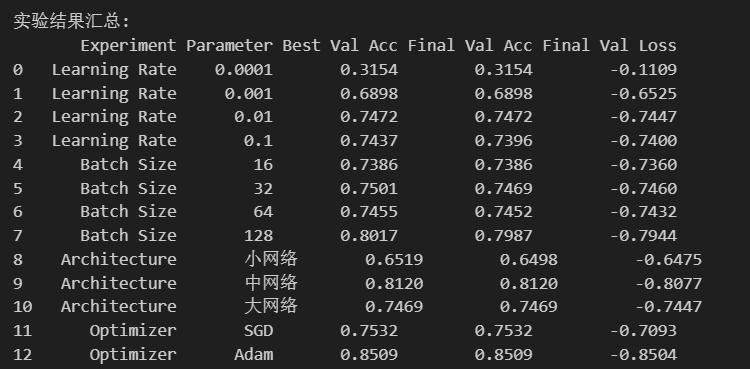
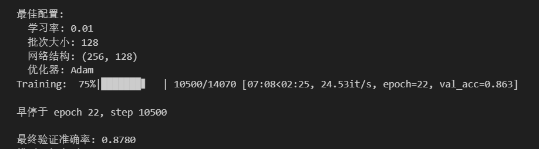
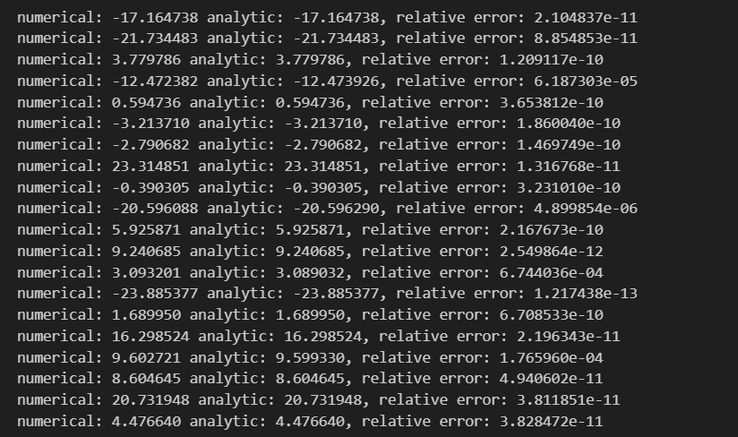
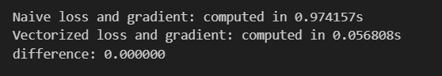
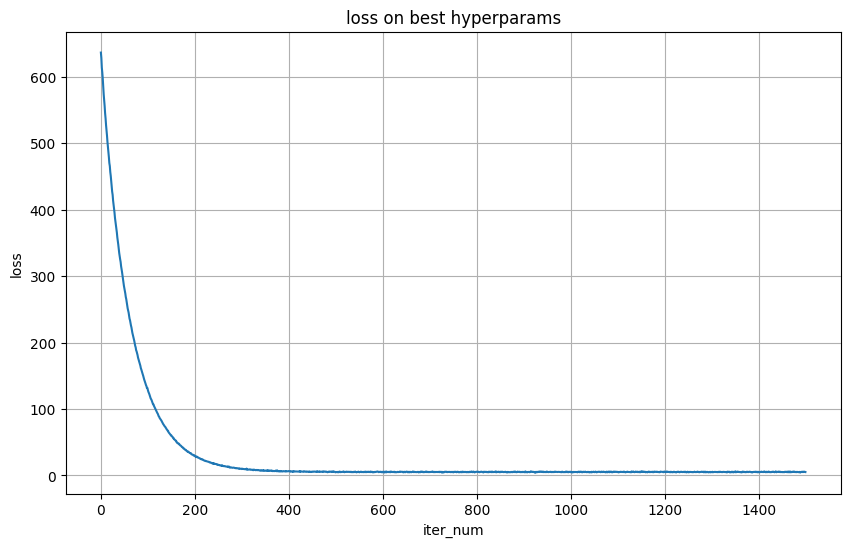
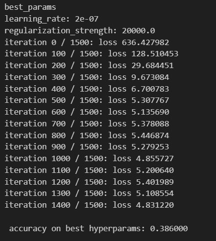

模式识别与机器学习 -- 实验2
本实验包含以下部分：
-
softmax （50%）
-
svm （50%）
softmax
1 手动实现 Softmax 函数 （15%）
def my_softmax(logits):
max_=logits.max(dim=-1, keepdim=True)[0]
logits=logits-max_
exp_logits=torch.exp(logits)
sum_exp=exp_logits.sum(dim=-1,keepdim=True)
probs=exp_logits/sum_exp
return probs
首先找出每一行的最大值，每一行减去该行最大值之后计算指数，最后通过除以每一行的和实现归一化，得到预测的概率。
2 创建自定义 Softmax 层 （15%）
class MySoftmax(nn.Module):
def __init__(self, dim=-1):
super().__init__()
self.dim = dim
def forward(self, x):
return my_softmax(x)
先将softmax函数封装成一个softmax层，在该层中调用之前定义的soft_max函数计算预测概率。
class CustomSoftmaxModel(nn.Module):
def __init__(self, hidden1=300, hidden2=100):
super().__init__()
self.flatten = nn.Flatten()
self.linear_relu_stack=nn.Sequential(
nn.Linear(28*28,hidden1),
nn.ReLU(),
nn.Linear(hidden1,hidden2),
nn.ReLU(),
nn.Linear(hidden2,10),
MySoftmax(),
)
def forward(self, x):
x=self.flatten(x)
probs=self.linear_relu_stack(x)
return probs
然后定义了使用softmax层的网络，与标准模型的差别就在于调用了soft_max层用于计算预测概率的输出。
3 参数调优实验（无需给出代码）
4 提交实验结果，只需截图最后的实验结果汇总和最佳模型的配置即可（20%）
实验结果汇总

最佳模型配置及结果

svm
一、损失和梯度的计算
1, 循环实现中的梯度计算（10%）
def svm_loss_naive(W, X, y, reg):
dW = np.zeros(W.shape) #初始化权重为0
num_classes = W.shape[1]
num_train = X.shape[0]
loss = 0.0
for i in range(num_train):
scores = X[i].dot(W) #计算每一类别的得分
correct_class_score = scores[y[i]] #确定正确类的得分
count=0 #用于计数有多少类别对应的margin大于0
for j in range(num_classes):
if j == y[i]:
continue
margin = scores[j] - correct_class_score + 1 # note delta = 1
if margin > 0: #margin大于0说明当前类别与正确类别界限模糊，计入损失
loss += margin
count+=1
dW[:,j]+=X[i]
dW[:,y[i]]-=count*X[i]
dW/=num_train
dW += 2 * reg * W
loss /= num_train
loss += reg * np.sum(W * W)
return loss, dW
整体思路是：每一次训练中，计算每一类别的得分，然后遍历每一类别比较当前类别得分和正确类别得分之间的差距。如果计算的margin大于0，则说明当前类别与正确类别预测错误或界限模糊，将其计入损失。
对于梯度的计算：
对于每个样本i和类别j，考虑损失函数对求导，当margin大于0时，计入损失的函数部分是，并且，故对于这些类别，产生的梯度为。对于margin小于等于0的类别，计入损失函数为0，故不产生梯度。
对于正确类别，对于每一个margin大于0的类别，都会产生一次梯度，因此计入的梯度为：。
2, 向量实现中的损失计算和梯度计算（15%）
def svm_loss_vectorized(W, X, y, reg):
loss = 0.0
dW = np.zeros(W.shape)
N=X.shape[0]
scores=X.dot(W)
correct_scores=scores[np.arange(N),y].reshape(N,1) #找到所有正确类别对应的分数
margins=scores-correct_scores+1 #计算得到margin矩阵，形状为(N,C)
margins[np.arange(N),y]=0 #将正确类别的margin'置为0
margins=np.maximum(0,margins) #将小于0的margin置为0
loss=np.sum(margins)/N #计算损失
loss+=reg*np.sum(W*W)
binary=np.zeros(margins.shape) #将原有margin矩阵复制一份
binary[margins>0]=1 #将所有margin大于0的元素置为1，便于计数
row_sum=np.sum(binary,axis=1) #得到每行margin大于0的类别数(循环实现中的count)
binary[np.arange(N),y]=-row_sum
#现在正确类别对应的元素值即为-count，margin大于0类别对应的元素值为1，其余为0
dW=X.T.dot(binary)/N
dW+=2*reg*W
return loss, dW
具体细节已经通过注释说明，主要思路是通过矩阵变换实现计算。
计算损失函数只需要保留矩阵中margin>0的部分再求和即可。计算梯度时，通过矩阵变换将正确类别对应地元素值变为-count，margin>0类别对应元素值为1，通过矩阵乘法直接实现梯度计算。
3, 在这里提交ipynb中的相关检查结果（不占额外分数，但这是判断上面的实现是否正确的重要依据.
梯度检查结果

SVM损失检查结果

SVM梯度检查结果

二、实现SGD
class LinearClassifier(object):
def __init__(self):
self.W = None
def train(
self,
X,
y,
learning_rate=1e-3,
reg=1e-5,
num_iters=100,
batch_size=200,
verbose=False,
):
num_train, dim = X.shape
num_classes = (
np.max(y) + 1
)
if self.W is None:
self.W = 0.001 * np.random.randn(dim, num_classes)
loss_history = []
for it in range(num_iters):
X_batch = None
y_batch = None
# 通过放回采样随机选取batch_size个样本（通过随机下标实现）
index=np.random.choice(num_train,batch_size,replace=True)
X_batch=X[index]
y_batch=y[index]
# 评估损失和梯度
loss, grad = self.loss(X_batch, y_batch, reg)
loss_history.append(loss)
self.W -= learning_rate * grad
if verbose and it % 100 == 0:
print("iteration %d / %d: loss %f" % (it, num_iters, loss))
return loss_history
def predict(self, X):
y_pred = np.zeros(X.shape[0])
y_pred = np.argmax(X.dot(self.W), axis=1)
return y_pred
每一次循环中，在所有样本中随机挑选batch_size个样本进行损失评估并计算梯度，最后通过学习率和梯度更新权重。
预测时通过计算每类得分，从中选取得分最高的类别作为预测输出，存储在y_pred中。
三、利用验证集做超参数调优
表格记录（5*5），可以自己尝试不同的组合 （10%）
| 学习率 \ 正则化强度 | 2.5e4 | 3e4 | 1e4 | 1.5e4 | 2e4 |
|---|---|---|---|---|---|
| 1.5e-7 | 0.366000 | 0.368000 | 0.314000 | 0.372000 | 0.344000 |
| 2e-7 | 0.366000 | 0.365000 | 0.343000 | 0.351000 | 0.376000 |
| 2.5e-7 | 0.366000 | 0.340000 | 0.344000 | 0.356000 | 0.361000 |
| 2.25e-7 | 0.355000 | 0.350000 | 0.344000 | 0.354000 | 0.373000 |
| 2.75e-7 | 0.328000 | 0.371000 | 0.340000 | 0.344000 | 0.349000 |
最优的结果的loss曲线截图和正确率截图（5%）
最优结果的loss曲线截图

最佳参数及正确率截图
